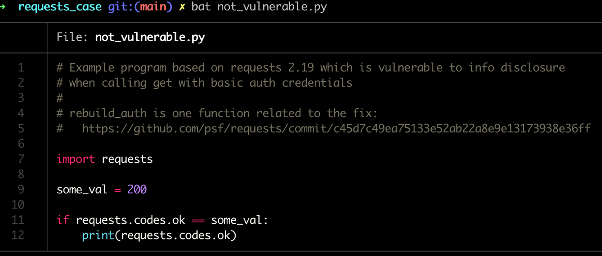

Introduction
In this post I'm going to (finally) write about some really cool research I was fortunate to work on at Cisco: narrow.
In short, narrow is a software composition analysis tool for python programs that uses program analysis to automatically determine what subset of
vulnerable dependencies are most likely to
actually affect you, thereby greatly improving the prioritization process.
If you're interested, the work is completely open source and can be obtained here:
https://github.com/duo-labs/narrow
Software Composition Analysis
It's 2023 and we have a lot of SCA tools. We hear about it so much, you might be tired of it. However, even given all the hype we're still struggling as an industry to manage it.
For example, back when I worked at Cisco we did a couple experiments and found that less than half of reported vulnerabilities in third-party components actually posed any relevant threat to us.
This was not really an uncommon finding and many others have reported similar values.
Why is so much of this irrelevant?
Answer: Even if all the reported components are correct (i.e., used by your program) that doesn't mean all the *code paths* are used.
Example: CVE-2022-21716 only affects your use of Twisted if you're using the SSH features of Twisted. Many users are not.

Rise of Static Analysis
How are we going to fix this? Answer: program analysis.
We're increasingly seeing tools that use control flow analysis to improve findings. e.g.
Semgrep Supply Chain,
govulncheck, among others.
However, they have their own issues. They usually require either:
-
Additional metadata associated with vulnerabilities in databases (the govulncheck case)
-
Manually created rules to indicate "targets" (the semgrep case)
This is problematic because both have scaling challenges to varying degrees. In the former you need to ensure that every vulnerability is supplemented with exploitation information
(most CVEs do not have this) or you need to manually write detection rules (which usually only address high-profile vulnerabilities).
Enter: narrow
Narrow addresses these problems by taking a third approach that requires no manual intervention. It is based off the following key insight:
Given a valid fix for some vulnerability,
At least one modified function must used in the exploit chain.
∴
If your program can't reach any of the modified functions,
the vulnerability must not affect you.

Narrow works by combining two processes:
- Patch extraction: Narrow automatically examines NVD, OSV, or other vulnerability databases and follows links to fixes for those vulnerabilities.
It then collects the set of functions modified by the fix.
-
Control flow analysis: Next, narrow uses a program analysis technique to determine how code execution flows in your target program.
If narrow ever finds a path from the entrypoint of your program to one of the "possibly relevant" functions, it indicates as such.
Example: CVE-2018-18074
Let's now see how narrow performs on a real CVE. If we examine the GitHub fix pull request for
CVE-2018-18074 we'll see
that the fix only changed one function: rebuild_auth.
As such, it's logical to assume that our program is only vulnerable if we too pass through that function.
Vulnerable case
So for example, given the following program:
We can see that there is a vulnerable code path and this CVE would be relevant. If we run narrow we'll see:
(Notice that rebuild_auth is automatically determined as a vulnerable target)
And finally, if we examine the output of narrow's "enriched" SBOM, we'll see:
Narrow correctly determined that this vulnerability *is* likely to affect us. Yay!
Not Vulnerable case
Now let's look at a simple program that is obviously not vulnerable.

If we again run narrow we'll see a different output in our SBOM:
Operationalization
To what extent does it help manage the load of reported vulnerabilities? What fraction of vulns might one expect narrow to "remove". What fraction might be "removed" incorrectly?
To determine this, I ran an experiment on three randomly picked Python-based Github projects. For each project I obtained an SBOM and set of vulnerabilities using pipaudit. I then fed the results to Narrow. The results were astonishing:
Notice the upshot here. Only 1/71 vulnerabilities across these projects were likely to affect the codebase. That means, given a random CVE, you might expect less than 2% to be relevant.
(It's also interesting that this number exactly matches semgrep's reported result as of July 2023 where they say: "Semgrep Supply Chain's reachability analysis lets you quickly find and remediate the 2% of issues that are actually reachable.")
That being said, it's worth noting that I also manually audited a random sample of the 71 vulnerabilities and found that although narrow's precision was ~100%, it's recall was only 20%.
As such, narrow is likely very useful as a way to prioritize a large number of vulnerabilities efficently. However, it can not with confidence tell you that you aren't vulnerable at all.
Reality Check
All software analysis tools have limitations and narrow is no exception. While very promising, narrow has several limitations:
- Expects single start point -> Libraries not well supported
- CFG generated statically -> Callbacks and dynamic execution problematic
- Requires python source -> Compiled dependencies can't be analyzed
Shout Outs
Shortly before presenting narrow I came across another SCA tool similiar in approach:
Eclise Steady. This tool also provides reachability analysis based on examining patches for Java programs.
The primary difference is that steady relies on its own vulnerability database (that contains the automated "targets") whereas narrow is purely a client-side tool that uses existing vulnerability databases.
Call to Action
We all have an agend. I'll tell you what mine is:
- If you build SCA tools: please incorporate reachability techniques. Expect it to be a common expectation of SCA tools at some point
- If you are involved in vulnerability database standards or working groups: can we make it more common to store “targets” in metadata?
- If you are a user of SCA tools: ask your vendors!
The Talk
I was given the amazing opportunity to present narrow at OWASP AppSec Global in Dublin in 2023. If you'd like to watch the video version of this article, take a look below:
Recording:
YouTube Link